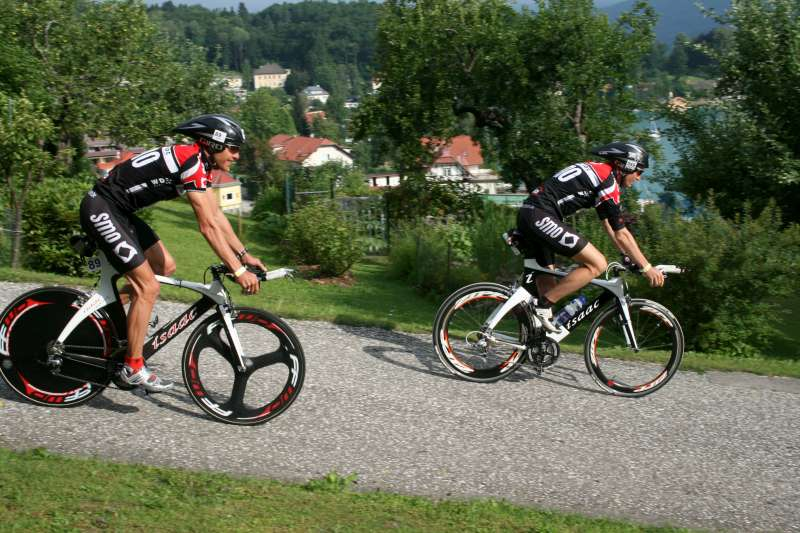

De afgelopen warme weken hebben blijkbaar een besmettelijke Hawaiaanse koorts veroorzaakt bij onze Ironmannen. Niet minder dan drie van onze atleten sleepten een potentieel ticket voor een verblijf in de Stille Oceaan in de wacht. Frederik DeVreeze verbaasde in Nice iedereen door in zijn eerste Ironman 14de te eindigen. Na 14 jaar triatlon was dit zijn laatste wedstrijd. Wij wensen langs deze weg Frederik te danken voor zijn bijdrage tot de ontwikkeling van en behalen van successen met het SMO team. We zullen de minzame en altijd vriendelijke Lovendegemnaar vanaf nu missen in ons team.
De afgelopen warme weken hebben blijkbaar een besmettelijke Hawaiaanse koorts veroorzaakt bij onze Ironmannen. Niet minder dan drie van onze atleten sleepten een potentieel ticket voor een verblijf in de Stille Oceaan in de wacht. Frederik DeVreeze verbaasde in Nice iedereen door in zijn eerste Ironman 14de te eindigen. Na 14 jaar triatlon was dit zijn laatste wedstrijd. Wij wensen langs deze weg Frederik te danken voor zijn bijdrage tot de ontwikkeling van en behalen van successen met het SMO team. We zullen de minzame en altijd vriendelijke Lovendegemnaar vanaf nu missen in ons team.
In Klagenfurt waren in het kielzog van Marino Vanhoenacker, Joury Gokel en Dominic De Caluwe aan het werk. Dominic, ook pas aan zijn eerste Ironman, eindigde 24ste en meteen goed voor Hawai. Joury deed nog beter en werd 18de . Zijn verbouwingsplannen voor het huis lagen al klaar maar worden misschien toch een jaartje opgeborgen om plaats te maken voor het grote avontuur. In Frankfurt haalde ook Filip Lasoen een voortreffelijke uitslag ditmaal zonder tegenslagen of startperikelen en kwam een paar minuten te kort om ook zijn ticket te halen. Michael De Wilde kende, in tegenstelling tot de anderen, wel de nodige pech en diende te Nice op een tiental kilometer van het einde de wedstrijd te staken.

Naast onze “oudjes” deden onze jongeren het eveneens voortreffelijk. Simon de Cuyper en Tom Vander Hoogerstraete verdedigden de Belgische kleuren op het EK under 23 te Treviso. Tom stelde zich ten dienste van ploegmaat Simon en bracht hem uit een bijna uitzichtloze situatie terug tot net achter de kopgroep, wat Simon een 26ste plaats opbracht. De dag nadien eindigde onze twee clubleden 10de in de ploegenwedstrijd. Maar er is duidelijk nog heel wat werk aan de winkel, vooral op zwemgebied, om mee te kunnen met de Europese toplanden.
Simon eindigde onverwachts, maar zeer verdiend, na een ijzersterk loopnummer als derde in Ferrol (Spanje) waar hij deelnam aan het ETU circuit (European Triathlon Cup). Op eigen bodem won hij onbedreigd “onze” triatlon van Sint-Laureins die voor de ‘4de maal naar SMO ging. Ook op plaats 2, en 4, 5 kregen we SMO’ers respectievelijk Joury, Sander en Dominic. Bovendien werden beide laatste Oost-Vlaams kampioen in hun leeftijdscategorie.

Tom Vander Hoogerstraete won te Eeklo zijn eerste wedstrijd van het seizoen en leidde de wedstrijd van start tot finish. Sander, ditmaal gespaard van alle lichamelijke ellende, probeerde tijdens het fietsen en lopen de kloof te dichten maar kwam niet echt dichter en moest zich tevreden stellen met een 2de plaats. Ook de dames lieten zich niet onbetuigd. Annemie Dupont en Melanie Matthys eindigden respectievelijk tweede en derde te Eeklo. Cyclocrosster Veerle Engels heeft duidelijk de smaak te pakken voor alles wat naar triatlon smaakt. In haar eerste kwart eindigde ze vijfde.
Andere prachtprestaties werden er geleverd door Mieke Dupont, (2de) te Oost-Duinkerke, en door Joury (3de) en Frederik (6de) in Leuven.
Pechvogel dit jaar is Stephane Staelens. Na een zeer geslaagd seizoendebuut met mooie ereplaatsen o.a. te Sint-Laureins kwam hij in Brugge ernstig ten val met een gespleten elleboog tot gevolg waardoor de rest van het seizoen bijna verloren is. Wij wensen Stephane een spoedig herstel en hopen hem binnenkort weer terug te zien.
De komende weken bereiden onze atleten zich voor op de Belgische Kampioenschappen. Op 1 augustus is er het BK Sprint te Antwerpen, 1 dag later de halve triatlon te Eupen en op 15 augustus de kwart in Izegem. Supporters allen daarheen.